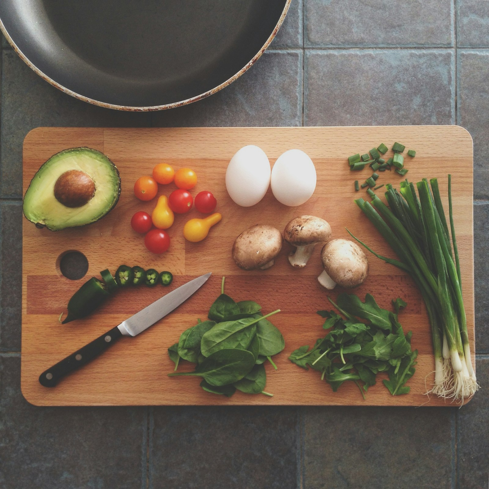
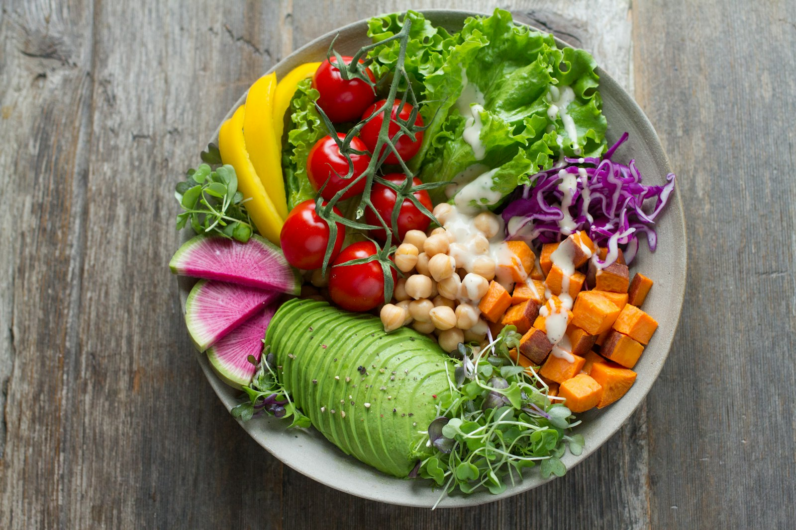
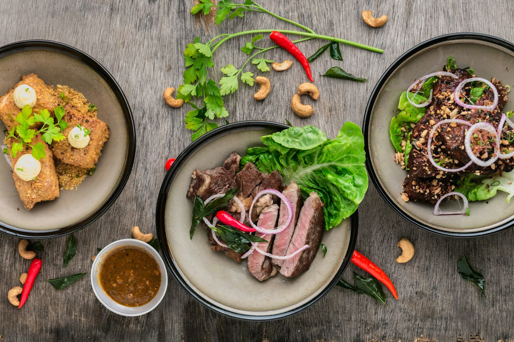

Good food, made together
Cooking classes, shared tables, and a kitchen open to our community.
Buy tickets


Cooking classes
Youth Cooking Classes
Youth 11 to 17 will join Arran and Stacey in learning kitchen skills, food safety, and how to prepare delicious local meals.
Cooking Demos
Join Arran Stark for a fun night of cooking skills and food fun. Cooking demos cost $40.
See all current class offerings and get tickets here.
Buy ticketsAbout Us
Arran Stark
Chef Arran Stark has dedicated the past 35 years to exploring and elevating the joy of food as an artistic expression that truly invokes all five senses. Educated through an American Culinary Federation apprenticeship and a culinary degree from Le cordon Bleu, Chef Stark brings a real-world approach to food that is riddled with fun stories of the journey.
Stacey Larsen
Stacey Larsen has been cooking since she was four, alongside her family on her grandparents' farm in Minnesota. Those early years taught her that good food starts with fresh, local ingredients made from scratch, and it's a value she has carried ever since. After earning a Master's in Education, Stacey brought her two passions together, teaching classes that celebrate healthy, local food. Through Food Lab, she's excited to share her love of this place and help kids and adults build the skills and confidence to cook for themselves.